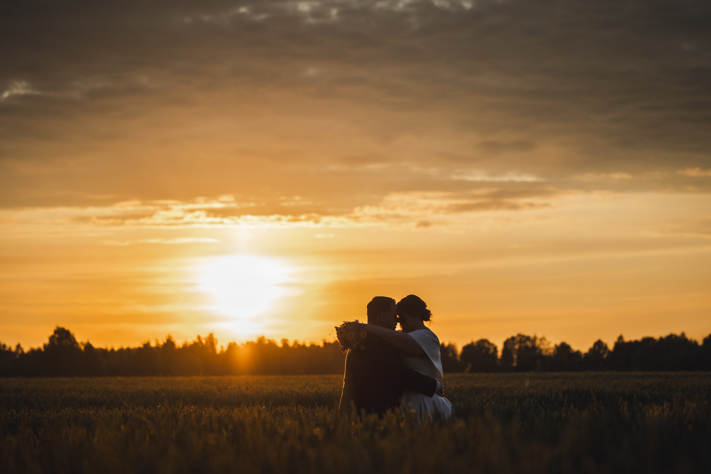

<!DOCTYPE html>
<html lang="en">
  <head>
    <meta charset="UTF-8" />
    <meta name="viewport" content="width=device-width, initial-scale=1.0" />
    <meta
      name="description"
      content="Mariko Passel on hobifotograaf Jõgevamaal, 
Põltsamaal ja Tartus. Pildistab kõiki ja kõike, aga eelkõige meeldivad 
lapsed ja tantsijad. "
    />
    <link
      href="https://cdn.jsdelivr.net/npm/bootstrap@5.1.3/dist/css/bootstrap.min.css"
      rel="stylesheet"
      integrity="sha384-1BmE4kWBq78iYhFldvKuhfTAU6auU8tT94WrHftjDbrCEXSU1oBoqyl2QvZ6jIW3"
      crossorigin="anonymous"
    />
    <script
      src="https://cdn.jsdelivr.net/npm/bootstrap@5.1.3/dist/js/bootstrap.bundle.min.js"
      integrity="sha384-ka7Sk0Gln4gmtz2MlQnikT1wXgYsOg+OMhuP+IlRH9sENBO0LRn5q+8nbTov4+1p"
      crossorigin="anonymous"
    ></script>
    <link rel="preconnect" href="https://fonts.googleapis.com" />
    <link rel="preconnect" href="https://fonts.gstatic.com" crossorigin />
    <link rel="preconnect" href="https://fonts.googleapis.com" />
    <link rel="preconnect" href="https://fonts.gstatic.com" crossorigin />
    <link
      href="https://fonts.googleapis.com/css2?family=Dancing+Script:wght@500;700&display=swap"
      rel="stylesheet"
    />
    <link rel="preconnect" href="https://fonts.googleapis.com" />
    <link rel="preconnect" href="https://fonts.gstatic.com" crossorigin />
    <link
      href="https://fonts.googleapis.com/css2?family=Dancing+Script:wght@500;700&family=Hubballi&family=Josefin+Sans:ital,wght@0,400;0,500;1,200&display=swap"
      rel="stylesheet"
    />
    <script
      src="https://kit.fontawesome.com/557f5bc334.js"
      crossorigin="anonymous"
    ></script>
    <link rel="stylesheet" href="styles/style.css" />
    <title>MarikoFotod</title>
  </head>
</html>

<body>
  <nav class="navbar navbar-dark bg-dark">
    <nav class="navbar navbar-expand-lg navbar-light">
      <div class="container-fluid">
        <a class="navbar-brand" href="#"></a>
        <button
          class="navbar-toggler"
          type="button"
          data-bs-toggle="collapse"
          data-bs-target="#navbarNavAltMarkup"
          aria-controls="navbarNavAltMarkup"
          aria-expanded="false"
          aria-label="Toggle navigation"
        >
          <span class="navbar-toggler-icon"></span>
        </button>
        <div class="collapse navbar-collapse" id="navbarNavAltMarkup">
          <div class="navbar-nav">
            <a class="nav-link active" aria-current="page" href="index.html"
              >Esileht</a
            >
            <a class="nav-link" href="about.html">Minust</a>
            <a class="nav-link" href="photos.html">Fotod</a>
            <a class="nav-link" href="prices.html">Hinnakiri</a>
            <a class="nav-link" href="studio.html">Stuudio</a>
            <a class="nav-link" href="wedding.html">Pulmad</a>
            <a class="nav-link" href="contact.html">Kontakt</a>
          </div>
        </div>
      </div>
    </nav>
  </nav>

<div class="content-container container">
    <div class="row">
      <div class="col-md-7">
        
        <h3 class="mt-3 text-center">
          Pakett 1 - Registreerimine ja ilupildid 
        </h3>

        <br>
        <p> ✨ Hetked, mis jäävad südamesse igaveseks. <br>
See pakett on loodud neile, kes soovivad jäädvustada oma tähtsa päeva kõige kaunimaid ja südamlikumaid hetki – registreerimist ning ilupilte.
<br>
📸 Pakett sisaldab: <br>
Kõikide oluliste detailide jäädvustamist <small>(sõrmused, kimp, ehted, kingad jmt)</small> <br>
Pruudi ja peigmehe registreerimise pildistamist <br>
Ilupiltide sessiooni teie valitud asukohas <br>
Professionaalset järeltöötlust ja galerii loomist <br>
Ligikaudu 100-200 hoolikalt viimistletud fotot <br>

🕊️ Ajakulu: umbes 2–3 tundi <br>
💬 Eelnev konsultatsioon: räägime läbi teie ideed, ootused ja unistused, et päev kulgeks täpselt nii, nagu soovite. <br>

💍 Hind: 450 €  <br>
</p>
    <br>
    <h3 class="mt-3 text-center">
         
         Pakett 2 - Täispäev 
        </h3>
        <p>
✨ Terve päev täis armastust ja mälestusi, mis kestavad igavesti. <br>

Täispäevane pakett on mõeldud neile, kes soovivad, et iga hetk – alates ettevalmistustest kuni viimaste tantsudeni – oleks jäädvustatud. <br>

📸 Pakett sisaldab: <br>

Pruudi ja peigmehe ettevalmistuste jäädvustamist, sh detailid  <br>

Registreerimist või tseremooniat <br>

Ilupiltide sessiooni, sh päikeseloojangu sessioon <br>

Külaliste, õnnitluste ja peo jäädvustamist <br>

Detailide ja emotsioonide püüdvat reportaaži <br>

Professionaalset järeltöötlust <br>

Ligikaudu 500-1000 hoolikalt töödeldud fotot <br>

🕊️ Ajakulu:  10 kuni 12 tundi <br>
💬 Eelnev konsultatsioon: arutame päevakava, stiili ja kõik soovid, et tulemus vastaks teie unistustele. <br>
💍 Hind: 1200 € <br>

</p>
</p>
<br>
<h3 class="mt-3 text-center">
          Pakett 3 - Teie lugu 
        </h3>
       <p>
        💖 Iga armastus on erinev – loome koos midagi ainulaadset. <br>
        See pakett on mõeldud paaridele, kellel on oma eriline nägemus sellest, 
        kuidas nad soovivad oma pulmapäeva jäädvustada. 
        Olgu see romantiline rannasessioon, intiimne mägipulm või mõni täiesti omanäoline idee – 
teeme selle teoks! <br>

📸 Sisaldab: <br>

Paindlik ajakava ja pildistamise kestus vastavalt teie soovidele <br>

Täielik loominguline koostöö: ideede, asukohtade ja stiili kujundamine <br>

Võimalus lisada lisatunde, eraldi sessioone või päev enne/pärast pildistamist <br>

Professionaalne piltide järeltöötlus <br>

Fotode arv vastavalt kokkuleppele <br>

🕊️ Ajakulu: kokkuleppel <br>
💬 Eelnev konsultatsioon: põhjalik arutelu teie ideede ja soovide üle, et luua täpselt teie unistuste sessioon. <br>
💍 Hind: sõltuvalt päevakavast ja töömahust
       </p>
        
<br>
  <br>
   
      </div>
      <div class="col-md-5">
        
        
        
        
        
        
        
      </div>
    </div>
  </div>
<footer>
      <div class="social-links d-flex justify-content-center"> 
      <a href="https://www.instagram.com/marikof0tod/" target="_blank">
        <i class="fa-brands fa-instagram"></i>
      </a>
      <a href="https://www.facebook.com/marikofoto/" target="_blank">
        <i class="fa-brands fa-facebook"></i
      ></a>
    </footer>


</body>
